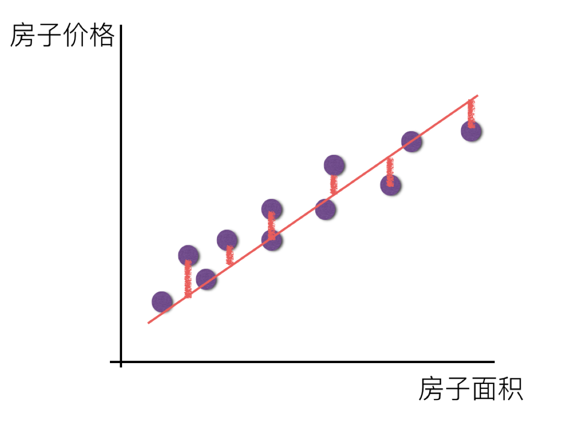
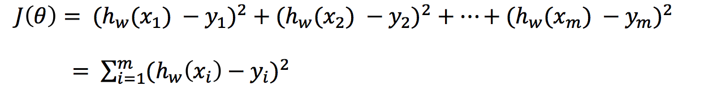
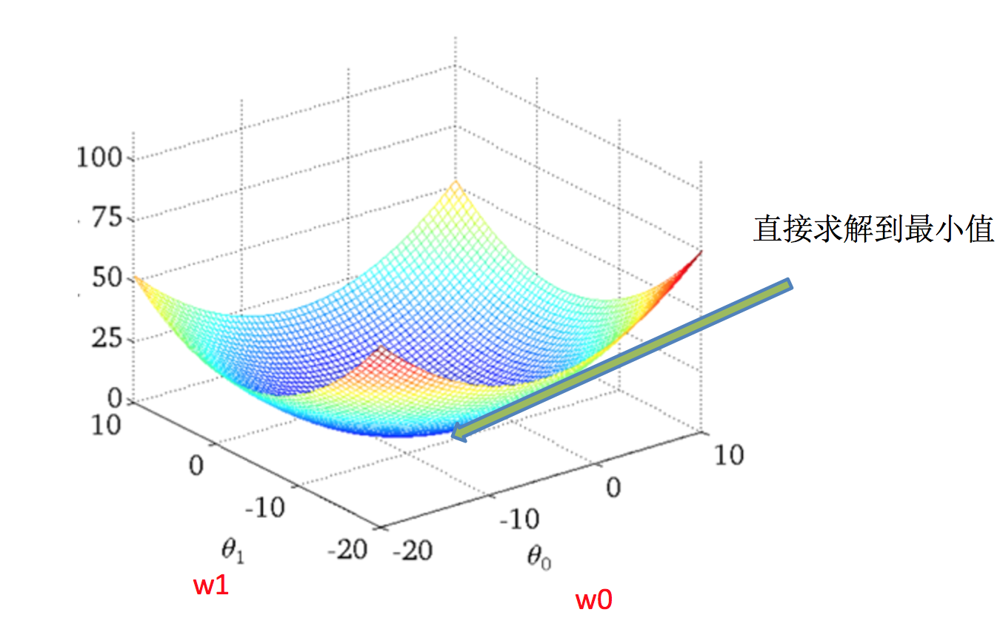
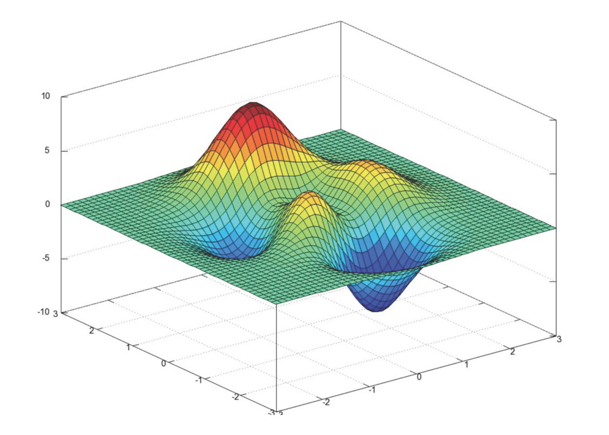

线性回归(Linear regression)是利用回归方程(函数)对一个或多个自变量(特征值)和因变量(目标值)之间关系进行建模的一种分析方式。

那么怎么理解呢？我们来看几个例子
上面两个例子，我们看到特征值与目标值之间建立的一个关系，这个可以理解为回归方程。
线性回归当中的关系有两种，一种是线性关系，另一种是非线性关系。在这里我们只能画一个平面更好去理解，所以都用单个特征举例子。


注释：如果在单特征与目标值的关系呈直线关系，或者两个特征与目标值呈现平面的关系
更高维度的我们不用自己去想，记住这种关系即可

注释：为什么会这样的关系呢？原因是什么？我们后面 讲解过拟合欠拟合重点介绍
如果是非线性关系，那么回归方程可以理解为：w1x1+w2x2^2+w3x3^2
假设刚才的房子例子，真实的数据之间存在这样的关系
$$ 真实关系：真实房子价格 = 0.02×中心区域的距离 + 0.04×城市一氧化氮浓度 + (-0.12×自住房平均房价) + 0.254×城镇犯罪率 $$
那么现在呢，我们随意指定一个关系（猜测）
$$ 随机指定关系：预测房子价格 = 0.25×中心区域的距离 + 0.14×城市一氧化氮浓度 + 0.42×自住房平均房价 + 0.34×城镇犯罪率 $$
请问这样的话，会发生什么？真实结果与我们预测的结果之间是不是存在一定的误差呢？类似这样样子

那么存在这个误差，我们将这个误差给衡量出来
总损失定义为：

如何去减少这个损失，使我们预测的更加准确些？既然存在了这个损失，我们一直说机器学习有自动学习的功能，在线性回归这里更是能够体现。这里可以通过一些优化方法去优化（其实是数学当中的求导功能）回归的总损失！！！
如何去求模型当中的W，使得损失最小？（目的是找到最小损失对应的W值）
线性回归经常使用的两种优化算法

理解：X为特征值矩阵，y为目标值矩阵。直接求到最好的结果
缺点：当特征过多过复杂时，求解速度太慢并且得不到结果


理解：α为学习速率，需要手动指定（超参数），α旁边的整体表示方向
沿着这个函数下降的方向找，最后就能找到山谷的最低点，然后更新W值
使用：面对训练数据规模十分庞大的任务 ，能够找到较好的结果
我们通过两个图更好理解梯度下降的过程


所以有了梯度下降这样一个优化算法，回归就有了"自动学习"的能力

sklearn提供给我们两种实现的API， 可以根据选择使用
给定的这些特征，是专家们得出的影响房价的结果属性。我们此阶段不需要自己去探究特征是否有用，只需要使用这些特征。到后面量化很多特征需要我们自己去寻找
分析
回归当中的数据大小不一致，是否会导致结果影响较大。所以需要做标准化处理。同时我们对目标值也需要做标准化处理。
回归性能评估
均方误差(Mean Squared Error)$$MSE$$评价机制：
$$ MSE=\frac{1}{m}\sum^m_{n=1}(y^i-\bar y)^2 $$
注：$y_i$为预测值，$\hat y$为真实值
sklearn.metrics.mean_squared_error(y_true, y_pred)from sklearn import datasets
import pandas as pd
from sklearn.linear_model import LinearRegression
from sklearn.model_selection import train_test_split
#载入数据集
boston = datasets.load_boston()
#先用key方法查看数据集
print(boston.keys())
#查看feature_names
print(boston['feature_names'])
#这里的data有13个维度，target就是我们要预测的房价，接下来再查看feature_names
print(boston['feature_names'])
#其中'RM'列就是我们需要的房间数，接下为了方便处理，我们将其转为DataFrame类型，并进行数据划分得到训练集和测试集
data = pd.DataFrame(boston['data'],columns=boston['feature_names'])
x = pd.DataFrame(data['RM'],columns=['RM'])
y = pd.DataFrame(boston['target'],columns=['target'])
x_train,x_test,y_train,y_test = train_test_split(x,y,test_size=0.33, random_state=42)
#接下来训练线性回归模型，并进行预测
lr = LinearRegression()
lr.fit(x_train,y_train)
y_pre = lr.predict(x_test)
#模型评价的好坏
#我们将从以下的均方误差(MSE)，均方根误差(RMSE)，平均绝对误差(MAE)，R Squared
from sklearn.metrics import r2_score
from sklearn.metrics import mean_squared_error
from sklearn.metrics import mean_absolute_error
print(r2_score(y_test,y_pre))
print(mean_absolute_error(y_test,y_pre))
print(mean_squared_error(y_test,y_pre))
#可视化
%matplotlib inline
plt.plot(y_test,label='real')
plt.plot(y_lr,label='lr')
plt.legend()
plt.show()
线性回归与岭回归，lasso回归的比较
from sklearn.linear_model import LinearRegression,Lasso,Ridge
from sklearn.datasets import load_boston
import matplotlib.pyplot as plt
boston=load_boston()
data = boston.data
target = boston.target
x_train = data[:450]
y_train = target[:450]
x_test = data[450:]
y_test = target[450:]
lr = LinearRegression()
rr = Ridge()
lasso = Lasso()
lr.fit(x_train,y_train)
rr.fit(x_train,y_train)
lasso.fit(x_train,y_train)
y_lr = lr.predict(x_test)
y_rr = rr.predict(x_test)
y_lasso = lasso.predict(x_test)
plt.plot(y_test,label='real')
plt.plot(y_lr,label='lr')
plt.plot(y_rr,label='rr')
plt.plot(y_lasso,label='lasso')
plt.legend()
plt.show()

| 梯度下降 | 正规方程 |
|---|---|
| 需要选择学习率 | 不需要 |
| 需要迭代求解 | 一次运算得出 |
| 特征数量较大可以使用 | 需要计算方程，时间复杂度高O(n3) |
SGDRegressor梯度下降(Gradient Descent)，原始的梯度下降法需要计算所有样本的值才能够得出梯度，计算量大，所以后面才有会一系列的改进。
随机梯度下降(Stochastic gradient descent)是一个优化方法。它在一次迭代时只考虑一个训练样本。
随机平均梯度法(Stochasitc Average Gradient)，由于收敛的速度太慢，有人提出SAG等基于梯度下降的算法
Scikit-learn：SGDRegressor、岭回归、逻辑回归等当中都会有SAG优化
SGDRegressor API 参数记忆回归算法的评估标准及其公式
波士顿房价预测